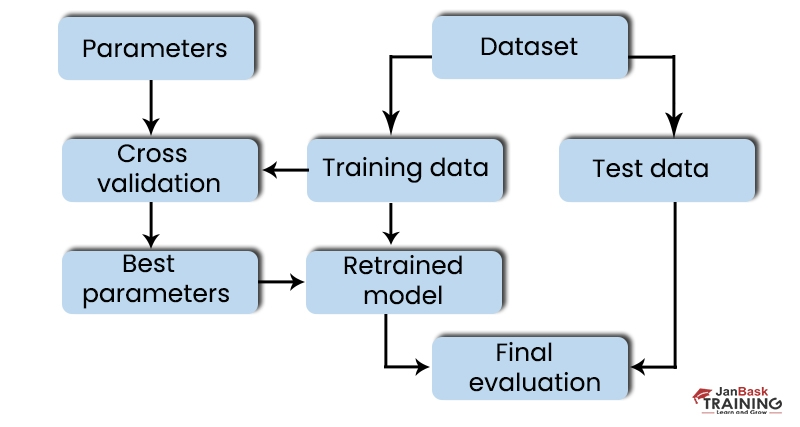
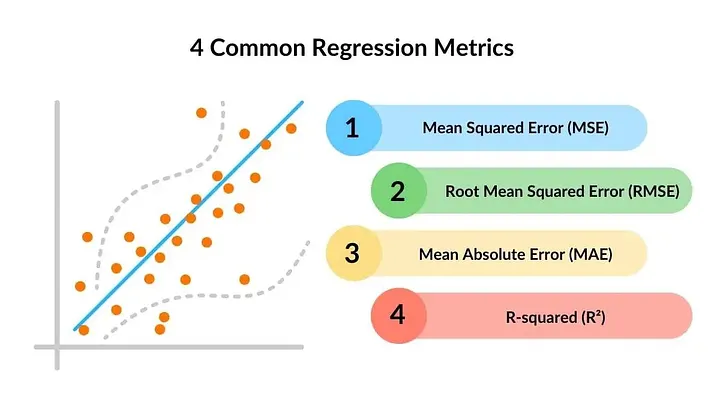
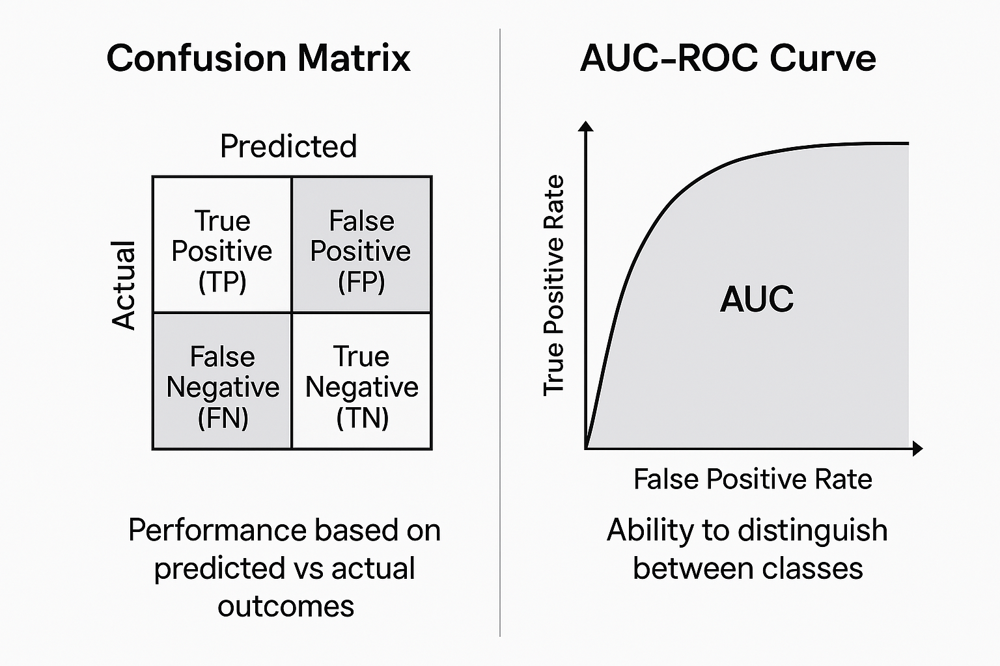
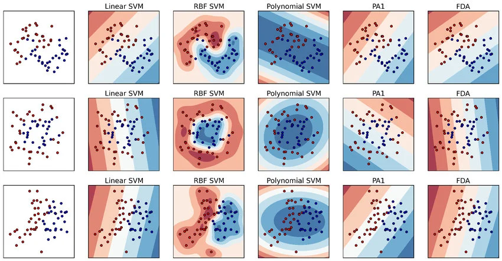
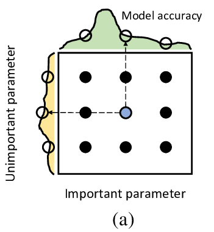
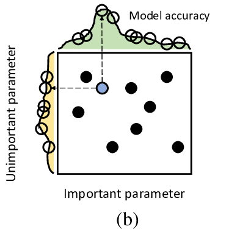

Big Picture: Reliable Model Evaluation
Once you have prepared your data and trained a first model, a bigger question appears: how do you know whether the model is actually good? This lecture answers that by focusing on methodology rather than just code.

This is also the lecture where the practical pipeline becomes more mature. Earlier lectures showed how to prepare and model data. Here, the emphasis shifts toward making decisions that are statistically sound and reproducible.
Notebook 6 — Evaluation Resampling
The first notebook of this lecture is about how to split data in a way that gives a realistic estimate of performance on unseen examples.
| Method | Main idea | Strength | Weakness |
|---|---|---|---|
| Static split | One train/test division | Fast and simple | High variance across different splits |
| K-Fold CV | Rotate the test fold K times | More stable estimate with mean and std | Training takes K times longer |
| LOOCV | Leave exactly one example out each time | Uses almost all data for training | Very slow and can fluctuate a lot |
| Repeated random splits | Repeat random train/test splits many times | Fast compromise between speed and stability | Some results may be slightly polluted by overlap patterns |
Why random seeds matter
A fixed random seed makes the split reproducible. That means you can compare algorithms or configurations fairly on the same shuffled data.
Why data leakage matters
If information from the test process contaminates training, your results become too optimistic and stop reflecting true generalization.
Notebook 7 — Performance Metrics
The second notebook focuses on the numbers used to judge prediction quality. The right metric depends on the task and on what kind of mistake matters most.
Classification metrics
Counts how often predictions are correct, but ignores how confident the model was.
Measures uncertainty. Lower is better because confident correct predictions are rewarded more strongly.
Measures discrimination ability across thresholds, from random guessing at 0.5 to perfect separation at 1.0.
Shows the full error structure: true positives, true negatives, false positives, and false negatives.
Regression metrics


| Metric | What it emphasizes |
|---|---|
| MAE | Average absolute distance between prediction and truth |
| MSE | Squares errors, so large mistakes are penalized more strongly |
| R² | How well the model fits the observed variation in the target |
One practical detail in scikit-learn is that some metrics appear with a neg_ prefix.
This is just a convention so that “higher is better” even for quantities that are naturally minimized, such as error values.
Notebook 8 — Comparing Algorithms
Once the evaluation method is fixed, the next step is to compare several algorithms under the same conditions instead of choosing one blindly.
- Logistic Regression
- LDA
- KNN
- SVM
Keep the dataset and evaluation procedure fixed, and compare multiple models with the same pipeline so the differences in performance are meaningful.

Notebook 9 — Hyperparameter Tuning
After choosing a promising model family, the next question is how to choose its hyperparameters. This notebook introduces the two standard tuning strategies used throughout machine learning practice.
Grid Search
Checks every combination in a predefined parameter grid. It is systematic and easy to reason about, but it is limited to the exact values you provide.
Randomized Search
Samples parameter values from distributions for a fixed number of attempts. It is often more efficient when the search space is wide or continuous.


Common Pitfalls
This lecture is full of methodology traps that can make a weak experiment look strong. Spotting them early is part of becoming reliable in machine learning.
Any contamination of evaluation data into training leads to unrealistically optimistic results.
A single number can hide poor confidence or the wrong balance of mistakes.
Changing the split, the seed, and the metric at the same time makes algorithm comparison much less meaningful.
Hyperparameter search without a good validation setup just creates better-looking noise.
Study Material
Use the slide deck for the notebook roadmap on resampling, metrics, algorithm comparison, and hyperparameter tuning.
View PDF →Use the transcript for the lecturer’s practical explanations on seeds, data splitting, metric interpretation, and why evaluation methodology matters so much.
View PDF →Repository with the notebook material used in the basic module, including the modeling notebooks used in this lecture.
This lecture works best when you study the page together with the notebooks, because almost every important idea here is tied to a concrete evaluation workflow.
Quick Review Quiz
1. Why is a random seed important when splitting data?
Because it makes the shuffle and split reproducible, so different algorithms or settings can be compared fairly on the same data partitions.
2. What is the main drawback of Leave-One-Out Cross-Validation?
It is computationally expensive because the model must be trained once for each individual observation.
3. How does Log Loss differ from Accuracy?
Accuracy only counts correct versus incorrect predictions, while Log Loss also measures how confident the model was in those predictions.
4. When is a confusion matrix more informative than a single accuracy score?
When you need to understand the specific types of errors being made, such as false positives versus false negatives.
5. Why do some scikit-learn metrics start with neg_?
Because scikit-learn uses a convention where higher is always better, so naturally minimized error quantities are negated.
6. What happens to training time as K increases in K-Fold Cross-Validation?
Training time increases roughly linearly with K because the model must be trained and tested K times.
7. What is the recommended default choice when you are unsure about the resampling method?
K-Fold Cross-Validation with K = 5 or K = 10 is a strong default choice.
8. What is the difference between Grid Search and Randomized Search?
Grid Search checks every combination in a predefined grid, while Randomized Search samples parameter values from distributions for a fixed number of tries.
9. Why can a model have high accuracy but still poor Log Loss?
Because it may predict the correct class often, but with low confidence, which Log Loss penalizes.
10. What does R² tell you in a regression problem?
It tells you how well the predictions explain the variation of the target values, giving a sense of goodness-of-fit.